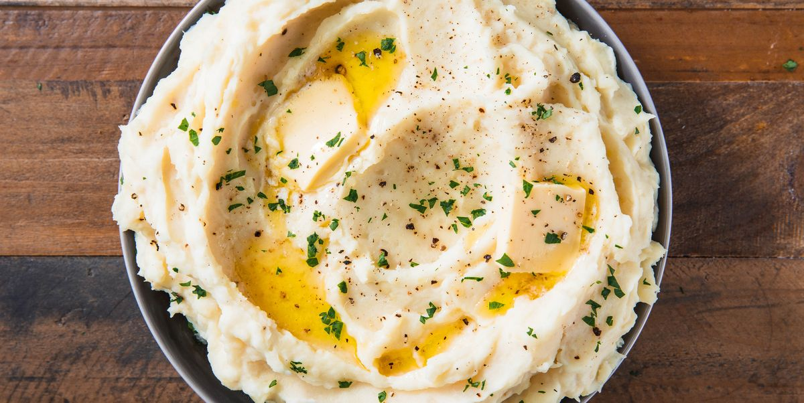

The only mashed potato recipe you will ever need.

Mashed potatoes with a focus on butter.
This mashed potatoes recipe is simple but effective. It is the only recipe
you will ever need because it is so simple and it is the foundation of mashed
potato recipes! Mashed potatoes are such a simple dish that is arguably the
main side on Thanksgiving but also a side that can be used for any good dinner meal.
Given this why not start with a simple mashed potato recipe ? I recommend peeling
and I also recommend putting in those extras if you are a fan of loaded potatoes,
(however, those you will add at the end after recipe is complete!) hello bacon!!
Ingredients
- 3 lb. mixed potatoes, such as russets & Yukon Golds
- Kosher salt
- 1/2 c. (1 stick) unsalted butter, plus 2 tablespoons for garnish
- 1/2 c. whole milk
- 1/2 c. sour cream
- Freshly ground black pepper
Step by step instructions
- In a large pot, cover potatoes with water and add a generous pinch of salt.
Bring to a boil and cook until totally soft, 16 to 18 minutes.
Drain and return potatoes to pot.
- Use a potato masher to mash potatoes until smooth.
- Meanwhile, in a small saucepan, melt butter with milk until warm.
- Pour over warm milk-butter mixture and stir until completely combined and creamy. Add sour cream and stir until combined.
- Season mashed potatoes generously with salt and pepper.
- Transfer potatoes to a serving bowl and top with remaining two tablespoons butter. Season with more pepper before serving.
That's it! If you want to add any bacon, chives, sour cream or cheese feel free to do so now
and have a party in your mouth!!!
Next Recipe
Back to Mainpage